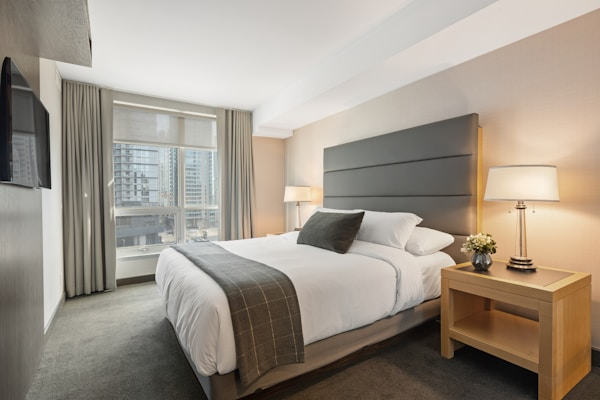
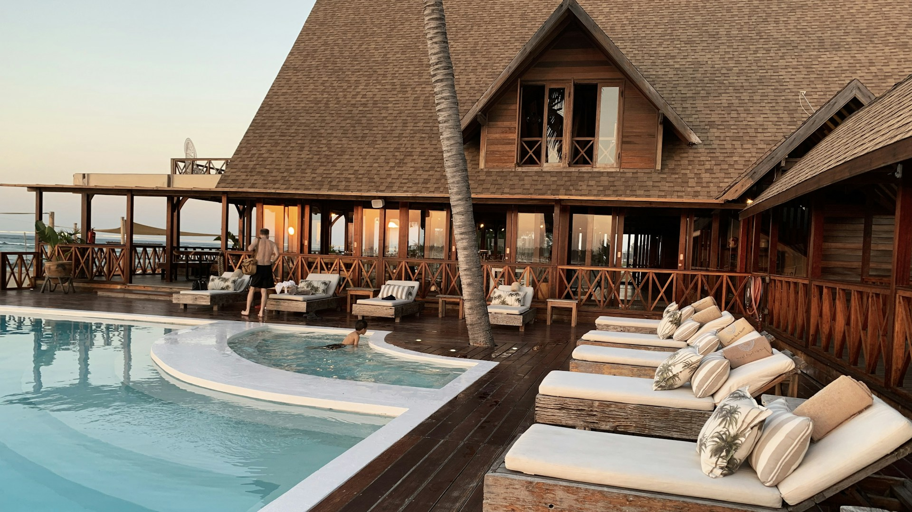
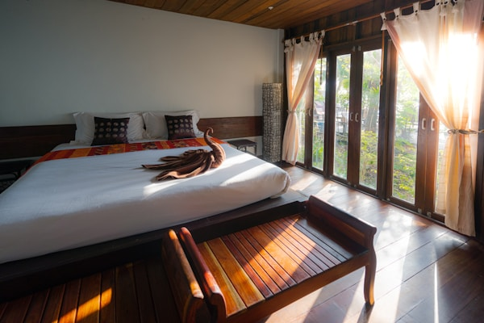
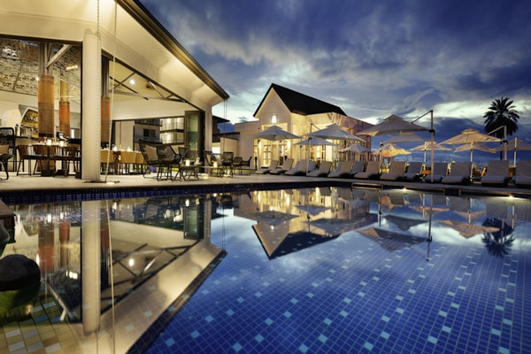

SAKİN
Işık Odası
Dinlenme, çalışma köşesi ve sade bir sabah ritmi için örnek sunum.

Oda seçimi, olanak anlatısı ve yerel konaklama taslağını bir araya getiren bağımsız arayüz demosu.
Odaları keşfetBu içerikler arayüzün bilgi mimarisini göstermek için hazırlanmıştır. Gerçek kapasite, konum veya hizmet taahhüdü içermez.

Dinlenme, çalışma köşesi ve sade bir sabah ritmi için örnek sunum.

Daha uzun konaklamalar için yaşam alanı merkezli örnek düzen.

Ortak zaman ve kişisel alan arasında dengeli örnek kurgu.
02 · OLANAK DİLİ
Kişisel bilgi istemez; seçimler gönderilmez veya saklanmaz.